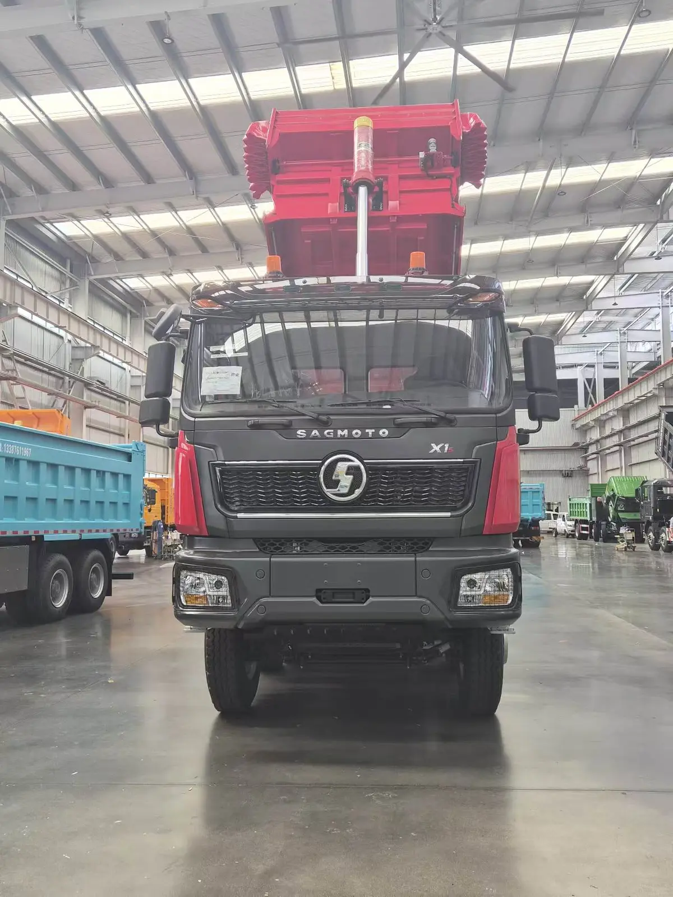

El SAGMOTO X1S 8x4 es un camión volquete de cuatro ejes para operaciones que necesitan una plataforma larga, potencia elevada y una caja de gran volumen. La unidad fotografiada combina un motor Cummins de 520 HP, transmisión FAST de 12 velocidades y una caja en U de 7,4 metros.
Respuesta directa: esta configuración puede ser una opción para construcción, movimiento de tierra y transporte pesado donde un 8x4 sea compatible con la ruta y la normativa local. Para República Dominicana, Costa Rica y otros mercados latinoamericanos, la selección final debe comprobar peso legal, carga por eje, emisiones, dimensiones y matriculación antes del pedido.
Especificaciones verificadas del SAGMOTO X1S 8x4
| Modelo | SX3313L5M52J3460 |
|---|---|
| Tracción / dirección | 8x4 · volante a la izquierda |
| Motor | Cummins M13E3 520 · 520 HP · 12,5 L · Euro III |
| Transmisión | FAST 12JSDX240T + QH50 + FHB400 |
| Distancia entre ejes | 1.950 + 3.425 + 1.400 mm |
| Velocidad máxima | 80 km/h |
| Eje delantero | HDZ 9,5 T |
| Eje trasero | HDZ 16 T MAN, doble reducción, carcasa fundida ancha, relación 5,262 |
| Bastidor / suspensión | (970–850) × 320 / 8+7+8 · suspensión minera reforzada 14/14/12 |
| Neumáticos | 12.00R24 / 20PR, mixtos delanteros y mineros traseros |
| Tanque | 400 L de aluminio |
| Caja | Forma U · 7.400 × 2.300 × 1.500 mm · piso 10 mm · laterales 8 mm · lona eléctrica |
Estos datos describen la configuración suministrada. Disponibilidad, precio, plazo y cumplimiento local se confirman para cada pedido.
¿Por qué una configuración 8x4?
La disposición de cuatro ejes permite evaluar una distribución diferente de la carga frente a un 6x4 y acompaña una caja más larga. No significa automáticamente una carga útil legal determinada: el peso en vacío, los límites por eje y el peso bruto permitido en cada país definen cuánto puede circular legalmente.
El motor Cummins M13E3 520 y la transmisión FAST 12JSDX240T forman un conjunto orientado a trabajo pesado. La relación de eje 5,262 debe valorarse junto con pendientes, velocidad y distancia diaria. Para rutas mixtas, canteras o zonas montañosas conviene describir el ciclo de trabajo antes de cerrar la configuración.


Caja en U para material a granel
La caja indicada mide 7.400 × 2.300 × 1.500 mm, con piso de 10 mm y laterales de 8 mm. Su perfil en U favorece la descarga de materiales a granel, mientras que la lona eléctrica ayuda a cubrir la carga. La elección debe considerar la densidad: arena húmeda, grava, roca y residuos pueden llenar un volumen similar y producir pesos muy distintos.
- material y densidad aproximada;
- peso legal y límite por eje;
- distancia y estado de la vía;
- altura libre, radio de giro y espacio de descarga;
- trabajo en carretera, obra, cantera o mina.
Cabina y operación diaria
La cabina incluye asiento neumático, suspensión mecánica de cuatro puntos, luces diurnas LED, climatización automática, pantalla LCD de 7 pulgadas, radio Bluetooth y alarma de reversa. También incorpora señalización de inclinación y giro de cabina en español, útil para mantenimiento y entrega en mercados hispanohablantes.


Evaluación para República Dominicana y Costa Rica
En República Dominicana, una solicitud útil debe indicar si el camión trabajará en construcción, movimiento de agregados, carretera o extracción, además del puerto de destino. En Costa Rica también importan pendientes, radios de giro y restricciones de ruta. En ambos casos deben comprobarse homologación, emisiones Euro III, pesos, dimensiones y matriculación con la configuración exacta.
No recomendamos seleccionar un volquete únicamente por potencia o volumen. La propuesta correcta combina carga, ruta, operación diaria y requisitos legales. Si se prioriza maniobrabilidad, compare el SAGMOTO X1S 6x4. Para cuatro ejes, consulte la ficha completa del X1S 8x4.

Preguntas frecuentes
¿Qué motor utiliza?
Cummins M13E3 520 Euro III de 12,5 litros y 520 HP.
¿Qué tamaño tiene la caja?
7.400 × 2.300 × 1.500 mm, piso de 10 mm, laterales de 8 mm y lona eléctrica.
¿Está disponible para República Dominicana y Costa Rica?
La disponibilidad se cotiza por pedido. Antes de confirmar deben revisarse homologación, emisiones, peso, dimensiones y matriculación.
¿Qué datos se necesitan para cotizar?
País y puerto, cantidad, material, densidad, carretera, pendientes, distancia diaria y requisitos locales.
Solicite configuración y cotización
Envíe su país, puerto, cantidad y condiciones de trabajo. Revisaremos el SAGMOTO X1S 8x4 antes de confirmar precio, producción y transporte.